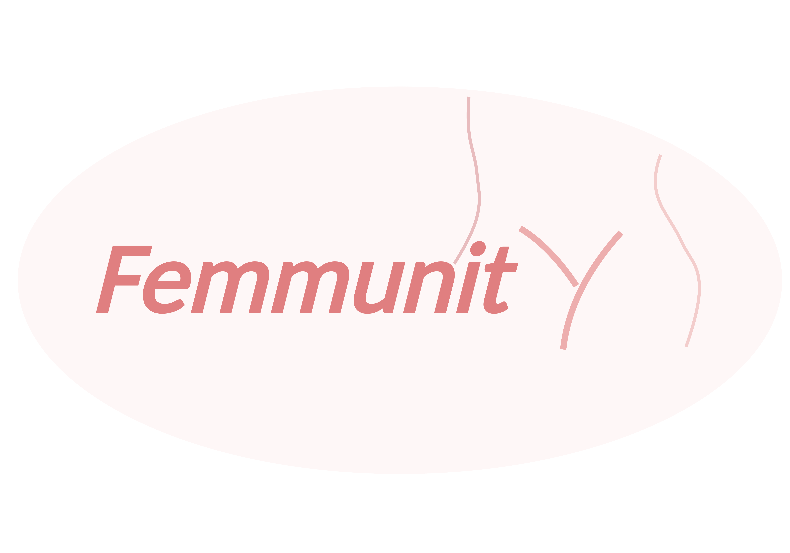

Geschlecht
Charakterisierung von Unterschieden zwischen Frauen und Männern in Immunzuständen, Immunantworten und molekularen Phänotypen.
FEMMUNITYX · BONN
Im Zusammenspiel von Hormonen, Stoffwechsel, Umwelt und Zeit.
Mit Ansätzen der Human-Systems-Immunologie untersuchen wir, wie biologisches Geschlecht und weibliche Physiologie die Variabilität des Immunsystems prägen — von Unterschieden auf Populationsebene über hormonelle Dynamiken innerhalb einzelner Personen bis hin zur gewebespezifischen Immunität.
Unsere Forschung entdecken ↓UNSERE VISION
Weibliche Immunität entsteht im Zusammenspiel von Geschlecht, Hormonen, Stoffwechsel, Umwelt und Zeit.
Mit systemimmunologischen Ansätzen untersuchen wir, wie diese Dimensionen Immunzustände zwischen Individuen und in unterschiedlichen physiologischen Kontexten prägen — und verbinden dabei geschlechtsspezifische Unterschiede auf Populationsebene mit longitudinalen Veränderungen innerhalb von Frauen und schließlich mit gewebespezifischer Immunität.
INTEGRIERTES FORSCHUNGSPROGRAMM
Geschlechtsspezifische Unterschiede des Immunsystems sind nicht statisch. Wir untersuchen, wie endokrine, metabolische und umweltbedingte Kontexte mit dem biologischen Geschlecht interagieren und Immunphänotypen prägen — und wie sich diese Zusammenhänge im Verlauf weiblicher Physiologie verändern.
Charakterisierung von Unterschieden zwischen Frauen und Männern in Immunzuständen, Immunantworten und molekularen Phänotypen.
Untersuchung, wie sich verändernde endokrine Milieus mit Zuständen und Funktionen von Immunzellen verbinden.
Erfassung der Wechselwirkungen zwischen Stoffwechselzustand, Ernährung und Immunregulation.
Untersuchung der Immunvariabilität in unterschiedlichen Ernährungs-, Mikrobiom- und Populationskontexten.
Longitudinale Untersuchung der Immunvariabilität über hormonelle Zustände, Zeit und biologische Kompartimente hinweg.
FORSCHUNGSPROGRAMME
Unsere Projekte untersuchen Immunvariabilität auf komplementären Ebenen — von Populations- und Stoffwechseldiversität über longitudinale weibliche Physiologie bis hin zu kontrollierten experimentellen Systemen und computergestützter Integration.
TransMic / TransInf
TransMic und TransInf untersuchen, wie Ernährung, Zusammensetzung des Mikrobioms und Stoffwechselzustand die menschliche Immunfunktion in unterschiedlichen Populationen und metabolischen Kontexten prägen.
Innerhalb von FemmunityX erweitern wir diese Fragen auf geschlechtsspezifische Unterschiede des Immunsystems und untersuchen, ob Ernährung, Adipositas, Insulinresistenz, Mikrobiomzusammensetzung und nahrungsabhängige Metaboliten die Immunfunktion bei Frauen und Männern unterschiedlich beeinflussen.
Partner: KCMC (Tanzania), Radboud UMC (The Netherlands), INSERM & Sorbonne Université (France), University of Florence & Meyer Children’s Hospital (Italy), RSS-URCN (Burkina Faso)
Förderung: JPI-HDHL · BMFTR
Femmunity
Femmunity untersucht, wie hormonelle Rhythmen die Immunvariabilität im Verlauf weiblicher Physiologie prägen. Wir nutzen den natürlichen Menstruationszyklus und hormonelle Kontrazeption als Modelle wechselnder endokriner Milieus und verfolgen Immunveränderungen longitudinal.
Das Programm erweitert sich von der peripheren Immunität hin zum reproduktiven Gewebe. Dadurch können wir untersuchen, welche Immunmerkmale stabil bleiben, welche hormonell dynamisch sind und wie sich Immunzustände zwischen biologischen Kompartimenten unterscheiden.
Partner: Jr. Prof. Marie-Christine Simon, University of Bonn
Mehr zur Femmunity-Studie →HormoneX
Wir entwickeln experimentelle Ansätze, um zu untersuchen, wie menschliche Immunzellen ex vivo direkt auf veränderte hormonelle Milieus reagieren.
Diese entstehende Forschungsrichtung ergänzt unsere Humanstudien durch die kontrollierte Untersuchung von Hormon–Immun-Interaktionen.
InformatYX
InformatYX ist unser sich entwickelndes computergestütztes Framework zur Analyse von Immundaten unter Berücksichtigung von biologischem Geschlecht und Physiologie.
Wir entwickeln analytische Workflows und Ressourcen, die Geschlecht, hormonellen Zustand, Stoffwechsel, Populationskontext und Physiologie in die Interpretation hochdimensionaler Immundaten integrieren.
ZENTRALE STUDIE

Die Femmunity-Studie untersucht, wie hormonelle Rhythmen das Immunsystem im Verlauf weiblicher Physiologie prägen. Anhand des Menstruationszyklus und hormoneller Kontrazeption als Modelle wechselnder endokriner Milieus verfolgen wir Immunvariabilität über die Zeit und über verschiedene biologische Kompartimente hinweg.
Unser Ziel ist es, über die Vorstellung eines einzigen weiblichen Immun-Basiszustands hinauszugehen und zu verstehen, welche Immunmerkmale stabil bleiben, welche hormonell dynamisch sind und wie sich diese Dynamiken vom peripheren Blut bis in das reproduktive Gewebe fortsetzen.
Partner: Jr. Prof. Marie-Christine Simon, University of Bonn
An der Femmunity-Studie teilnehmen →Sie möchten lieber anrufen? +49 228 4330 2707

01 · NATÜRLICHER ZYKLUS
Longitudinale Immunprofilierung parallel zu natürlichen hormonellen und metabolischen Veränderungen.

02 · HORMONELLE MODULATION
Untersuchung, wie exogene hormonelle Zustände mit immunologischen und metabolischen Verläufen interagieren.

03 · GEWEBESCHNITTSTELLE
Untersuchung der Immunbiologie an der Schnittstelle zum reproduktiven Gewebe mithilfe von Menstruationsflüssigkeit und Single-Cell-Omics.
WOHIN DIES FÜHRT
Die Verknüpfung von Immunzuständen über Physiologie, Zeit und Gewebe hinweg ermöglicht es, koordinierte Muster — und letztlich die treibenden Faktoren — weiblicher Immunvariabilität zu identifizieren.
WIE WIR ARBEITEN
AUSGEWÄHLTE FORSCHUNG
Marcus Altfeld, Camila Consiglio, Darragh Duffy, Molly Ingersoll, Cliona O'Farrelly, Tal Pecht✉, Tal Shay & Helena Soares
Diese Arbeit unterstreicht die Notwendigkeit, biologisches Geschlecht und Gender als zentrale Dimensionen in die immunologische Forschung zu integrieren – ein entscheidender Schritt, um Unterschiede in Immunantworten besser zu verstehen und eine präzisere und gerechtere Medizin zu entwickeln.
Publikation lesen ↗Godfrey S. Temba*, Tal Pecht*, Vesla I. Kullaya, Nadira Vadaq, Mary V. Mosha, Thomas Ulas, Sneha Kanungo, Liesbeth van Emst, Lorenzo Bonaguro, Jonas Schulte-Schrepping, Elias Mafuru, Paolo Lionetti, Musa M. Mhlanga, Andre J. van der Ven, Duccio Cavalieri, Leo A. B. Joosten, Reginald A. Kavishe, Blandina T. Mmbaga, Joachim L. Schultze, Mihai G. Netea & Quirijn de Mast
Die Studie zeigt, wie tiefgreifend Ernährung den menschlichen Immun- und Stoffwechselzustand verändern kann, und schafft damit eine Grundlage für die Frage, wie diese Reaktionen mit biologischem Geschlecht und weiblicher Physiologie zusammenwirken.
Publikation lesen ↗Alina Schieren, Sandra Koch, Tal Pecht & Marie-Christine Simon
Die Arbeit untersucht, wie physiologische Hormonschwankungen während des Menstruationszyklus mit dem Glukosestoffwechsel und dem Darmmikrobiom interagieren – zentrale biologische Dimensionen der dynamischen weiblichen Physiologie.
Publikation lesen ↗Godfrey S. Temba, Nadira Vadaq, Vesla Kullaya, Tal Pecht, Paolo Lionetti, Duccio Cavalieri, Joachim L. Schultze, Reginald Kavishe, Leo A. B. Joosten, Andre J. van der Ven, Blandina T. Mmbaga, Mihai G. Netea & Quirijn de Mast
Die Studie zeigt, wie Umwelt, Ernährung und populationsspezifische Faktoren zu Unterschieden im menschlichen Entzündungssystem beitragen – und verdeutlicht damit die Notwendigkeit, Immunität als dynamischen und kontextabhängigen Phänotyp zu verstehen.
Publikation lesen ↗Godfrey S. Temba*, Vesla I. Kullaya*, Tal Pecht*, et al.
Die Studie zeigt, wie Lebensstil, Ernährung und Stoffwechsel systemische Entzündungsprozesse bei gesunden Menschen beeinflussen – und verdeutlicht die bemerkenswerte Anpassungsfähigkeit des menschlichen Immunsystems an unterschiedliche Lebensumwelten.
Publikation lesen ↗Tal Pecht, Anna C. Aschenbrenner, Thomas Ulas & Antonella Succurro
Die Arbeit untersucht computergestützte Ansätze zum Verständnis biologischer Heterogenität in Populationen und einzelnen Zellen – eine konzeptionelle Grundlage für die Erforschung komplexer und dynamischer Unterschiede in Immunantworten.
Publikation lesen ↗TEAM
Wir sind ein interdisziplinäres Team in der Abteilung Systems Medicine am DZNE und verbinden Humanimmunologie, weibliche Physiologie, Molekularbiologie und computergestützte Ansätze. Gemeinsam untersuchen wir Immunvariabilität auf verschiedenen Ebenen — von Humankohorten und longitudinaler Physiologie bis hin zu molekularen und systemweiten Analysen.
Wir arbeiten disziplinübergreifend, um Immunvariabilität von Humankohorten und longitudinalen Studien bis hin zu molekularen und systemweiten Analysen zu untersuchen.

Geschlechtsunterschiede · weibliche Immunität · Systems Immunology

Geschlechtsunterschiede · Immunmetabolismus · Systems Immunology

Östrogensignale · Immunregulation

Reproduktionsimmunologie · Systems Immunology
FEMMUNITYX
Wir freuen uns über den Austausch mit Forschenden und Studierenden, die sich für Humanimmunologie, weibliche Physiologie, Immunmetabolismus, Single-Cell-Biologie und computergestützte Systemansätze interessieren.